A4: Subtractive Manufacturing!
3D printing a box
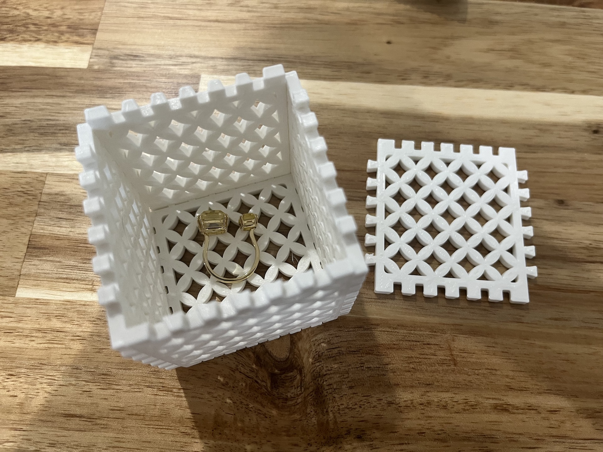
This is my finished 3D box that I printed at home. The total print time of this box is 5 hours 4 mins.
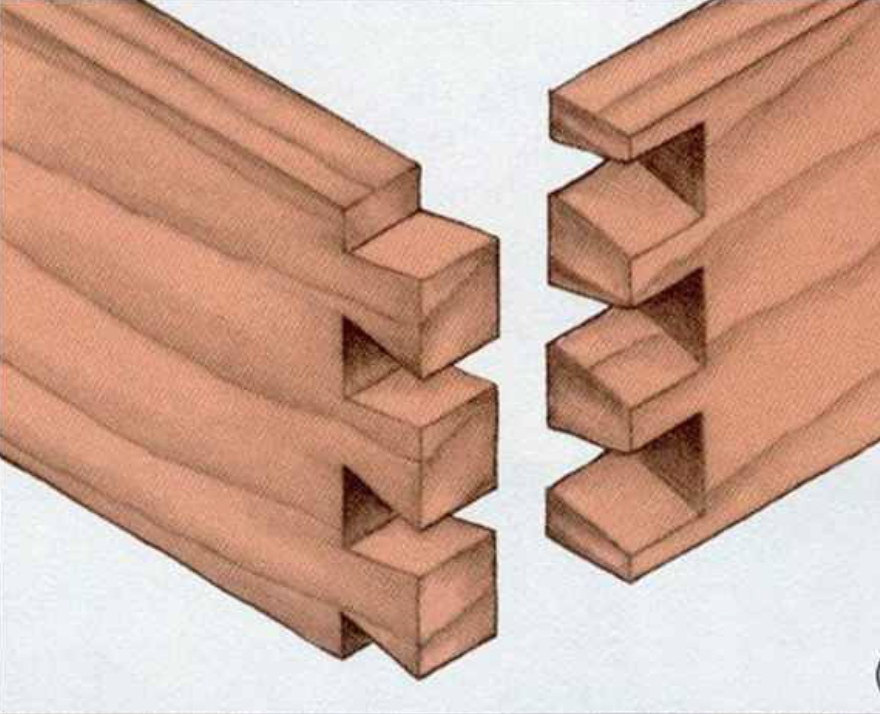Since last week's practice on 3D printing, I have more sense of how to nest parts and structures.
To design a box made up of flat panels with finger joints or boxjoints, after browsing different types of finger joints. I decided to use a
through dovetail joint to join boxes. It’s common to use on the rear corners of drawers, so I believe it should work great with
tight fit. It contains a flaring tenon and a mortise into, making an interlocking joint between two flat panels of a box.
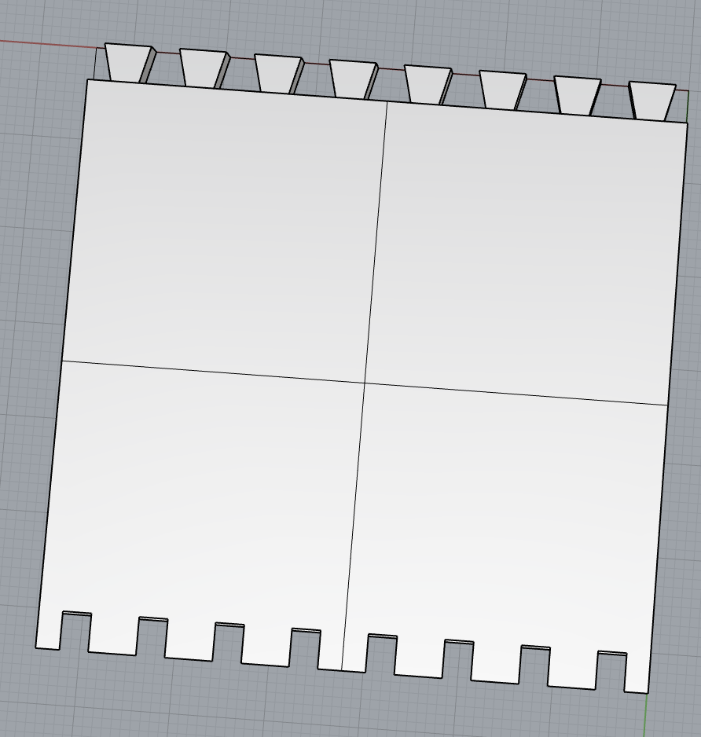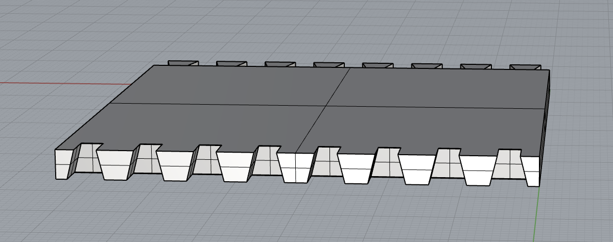
I felt more comfortable drawing geometries in Rhino than before! I know there are so many fancy
and efficient ways to get this result, like grasshopper, but I still prefer to use the command Trim to finish this job.
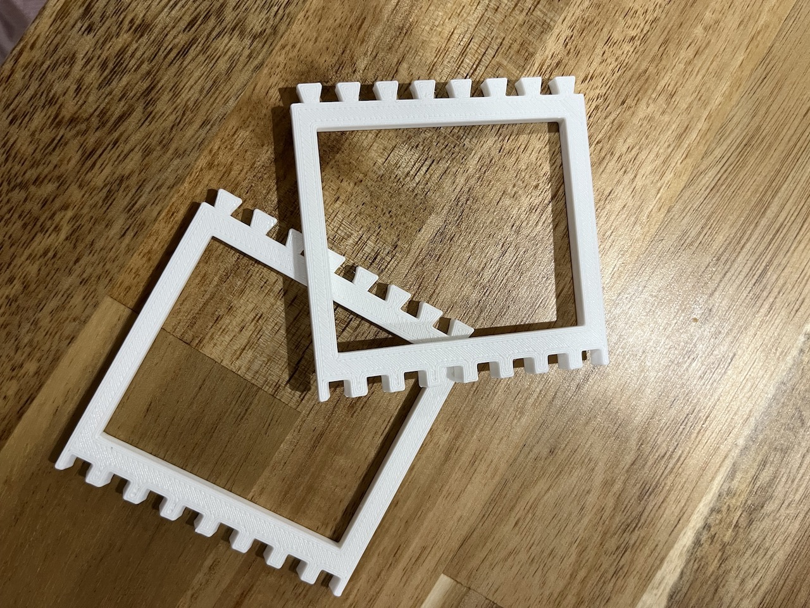
I first printed two samples with a hollow center to reduce the print time. The result is they
couldn’t join together because the tenon is too large to fit into the mortise. After making sure there were no wobbles, loose
screws, or loose belts on my printer, I decided to give them more tolerance.
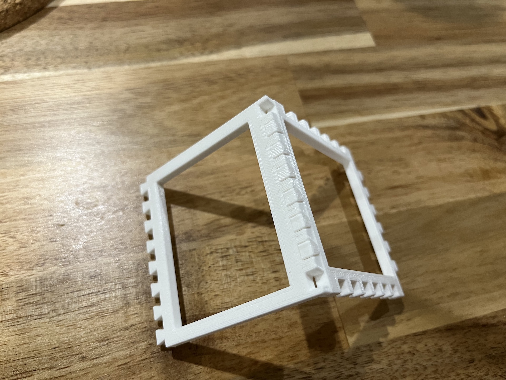
After modifying the model by rescaling all the tenons to 0.9 in the Y direction, it works! I also
printed a smaller version to reduce the print time.
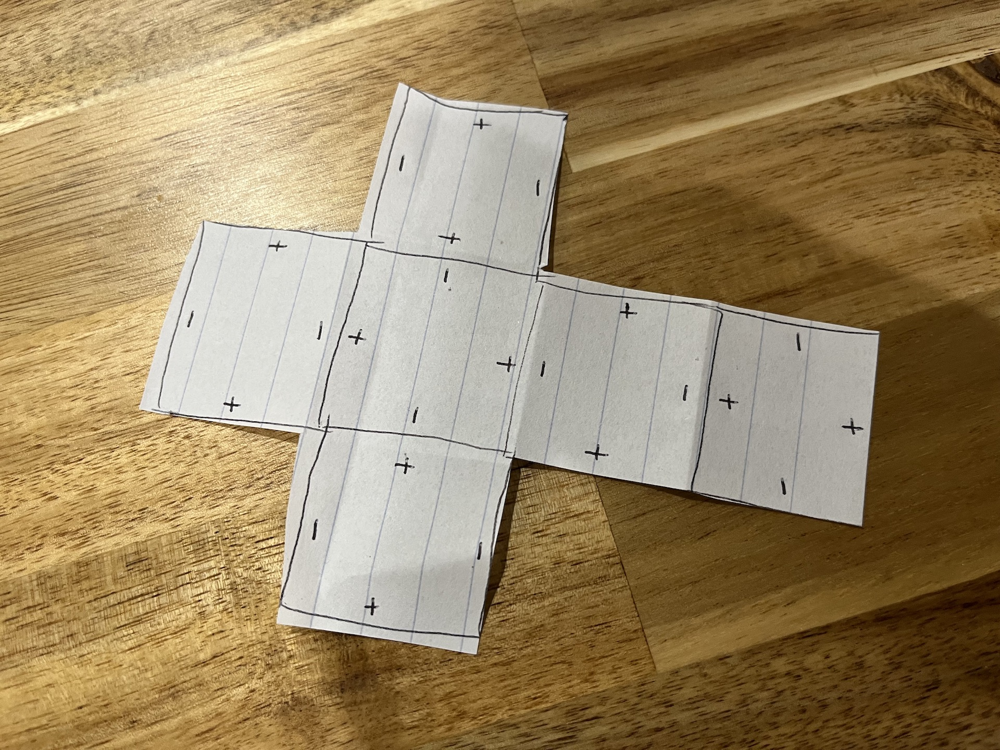 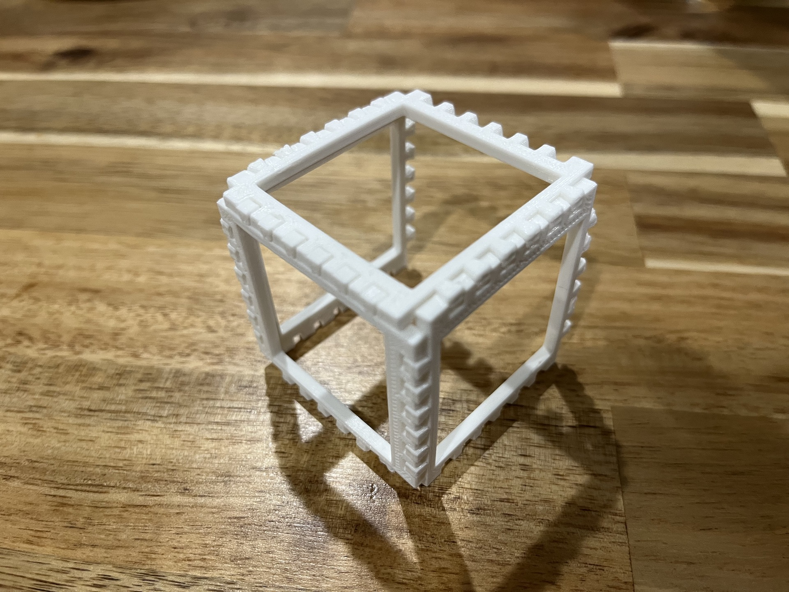
Then I noticed a problem if I need to connect six pieces into a box of six interfaces,
I cannot place tenon or mortise near the corner, or neighboring pieces cannot join. I removed one tenon or mortise from each side.
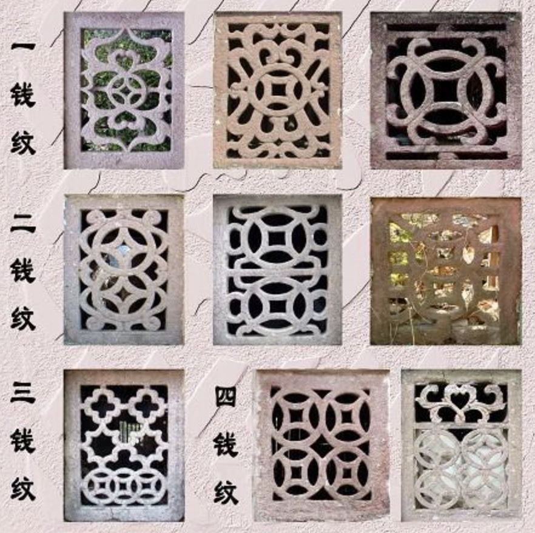
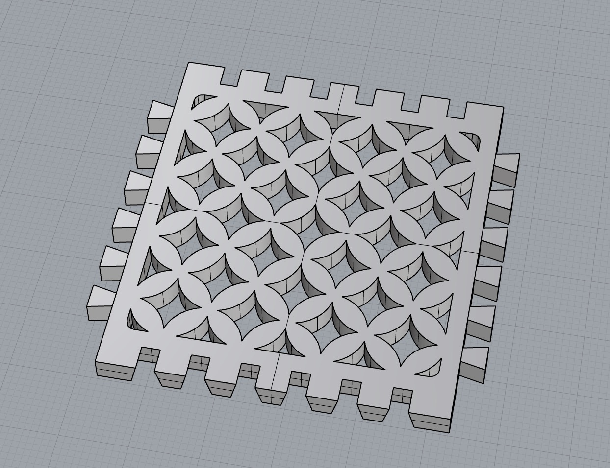
Then I added my favorite pattern - Ancient Chinese style inside of it!
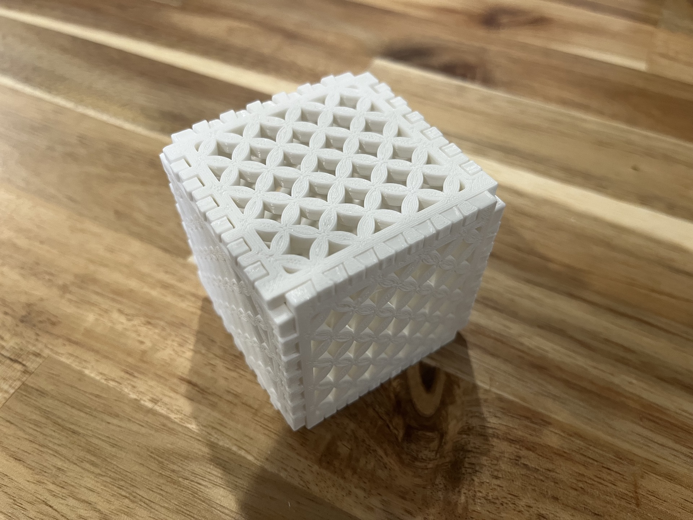
Final outcome!
This week I finished it independently!
Resources:
Interlocking joints
Pattern
Return to home